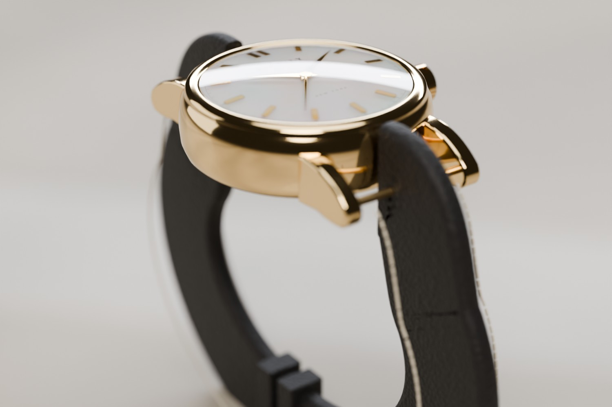
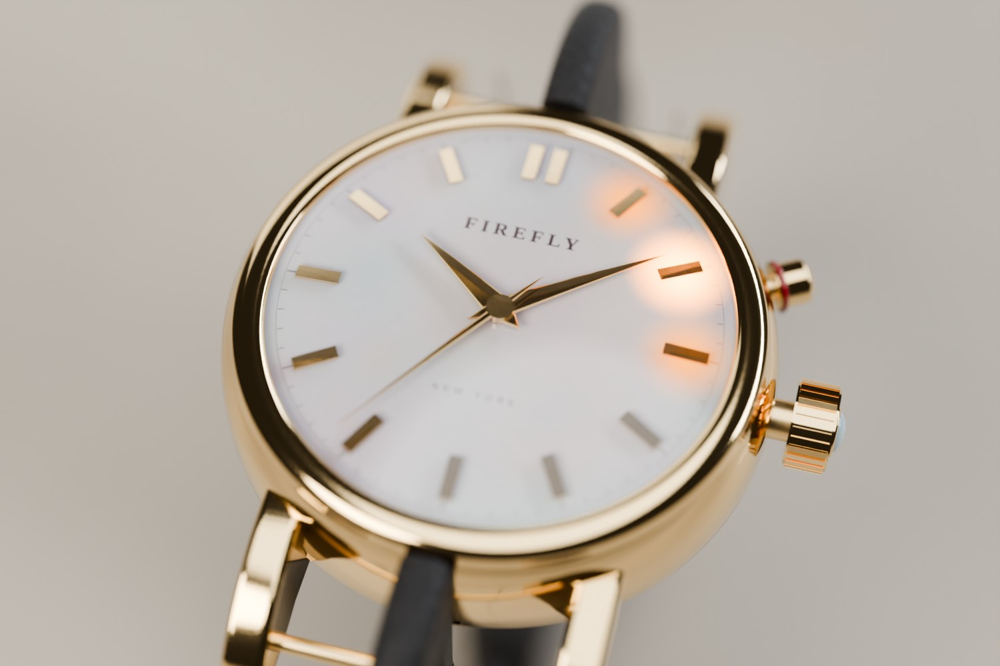
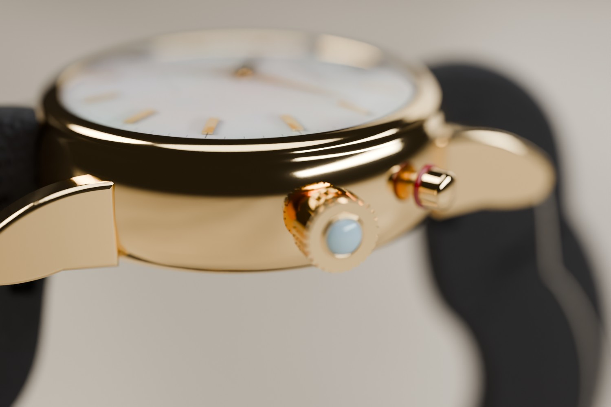
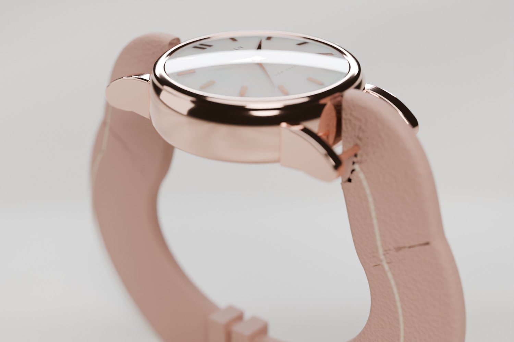
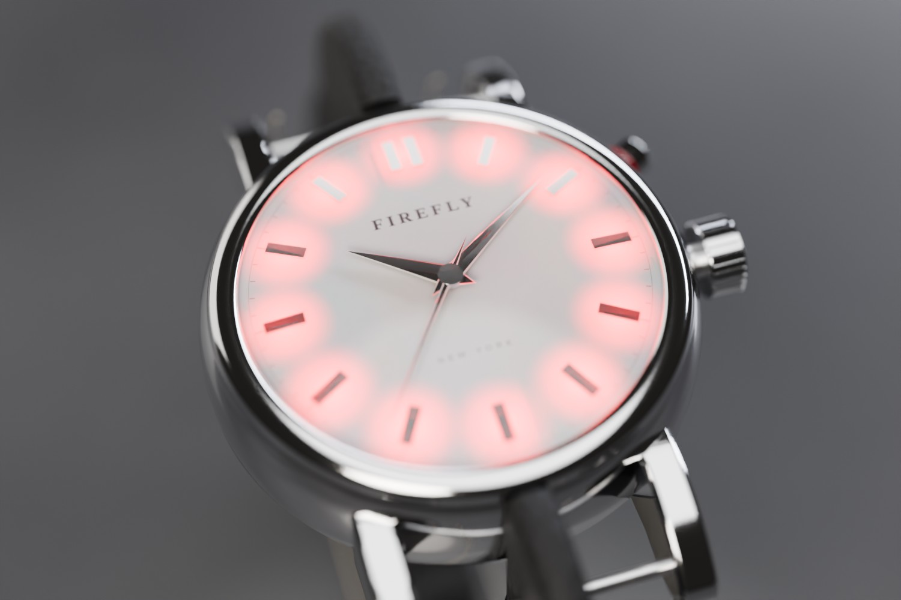
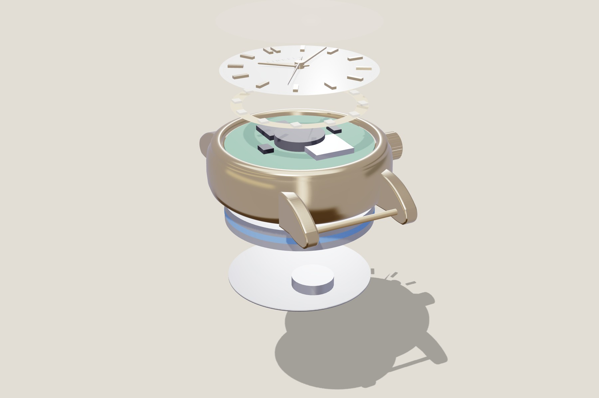

Everything Firefly needs, disguised as an ordinary dress watch. The crown is the Find button, a small pusher is Safety, the mother-of-pearl dial glows through its hour markers, and the antennas hide inside the leather strap. Friends nearby connect directly with no network; anyone farther away, 6 miles or more, is tracked over low-power cellular.
A proposal only. The concept page, website, video and app stay as they are until this is approved.Drag to turn it, scroll or pinch to zoom. Real size: 34 mm case, 16 mm strap, on a 165 mm wrist.
| Firefly needs | Hidden as | How it works |
|---|---|---|
| Button 1 · Find | The crown at 3 o'clock | Knurled gold crown with a small opal cabochon on its tip. Press it in like setting a watch. It's the button your thumb finds first. |
| Button 2 · Safety | A pusher at 2 o'clock | Smooth, slimmer than the crown, ringed in red enamel, so it feels and looks different. Its position also makes it hard to press by accident when your wrist bends. |
| The glowing stone | Mother-of-pearl dial, lit markers | Twelve LEDs under the dial shine through a small translucent window under each hour marker. Finding: the marker pointing toward your friend glows and pulses faster as you get closer. SOS: the dial pulses red. Check-in delivered: one green sweep. |
| Antennas | Inside the strap, both halves | Flexible antennas laminated between the leather layers, outside the metal case: LoRa on the 12 o'clock side, cellular and GPS on the 6 o'clock side. That fixes the gold-blocks-the-radio problem, so the case can be real metal. |
| Long-range tracking | One extra chip on the board | A cellular IoT chip with built-in GPS (Nordic nRF9151) sends your position over the low-power LTE-M and NB-IoT networks when friends are out of radio range. See "Range" below. |
| Battery | Under the dial | A round cell about 30 mm across and 3 mm thick, 185–210 mAh. Cells this size are sold off the shelf for wearables. No clasp box any more. |
| Vibration motor | The caseback | An 8 mm coin motor pressed against the skin, so the hot-or-cold pulse is felt and never heard. |
| Charging | Two pins on the caseback | A magnetic cable snaps onto the back. No port to seal. |
| Telling time | Real hands | A tiny stepper motor driven by the same chip moves the hands, like a hybrid smartwatch. A watch that doesn't tell time would give the disguise away. |
No wrist-sized radio reaches 6 miles straight to another wrist in a city. Bodies, buildings and a tiny antenna cap that link at about 50–150 m in a packed club and 300 m–1 km outdoors. So the watch keeps the direct link for friends nearby and reaches everyone farther away through networks. The cellular layer is what guarantees 6 miles; the other two are free fallbacks on hardware the watch already has.
| Layer | Reach | With a weak or no signal | Hardware and cost |
|---|---|---|---|
| Watch to watch (LoRa) | 50–150 m indoors, 300 m–1 km outdoors, more with relays | Works with zero bars: no phone, tower or internet. Finding, "come find me", help and SOS. | Already in the design (SX1262). |
| Cellular LTE-M / NB-IoT · core | 6 miles and beyond: anywhere with IoT coverage | Built for weak signal. NB-IoT allows about 164 dB maximum coupling loss and LTE-M about 161 dB, roughly 20 dB more than a phone's normal LTE link, so it often gets through where a phone shows no bars. | Nordic nRF9151: LTE-M, NB-IoT and GPS in one 12.1 × 11.1 × 1.2 mm package. One-time data: 1NCE sells 10 years and 500 MB for $10 plus $1 for the SIM. |
| Amazon Sidewalk · free fallback | Hundreds of metres to about half a mile from any Echo or Ring device | Uses the same LoRa radio. Amazon says it covers about 90% of the US population, and moving devices roam between bridges. | No new parts: Nordic supports Sidewalk on the nRF52840 with the SX1262. A LoRa message is limited to 19 bytes; a compressed position fits. |
| Phone crowd networks · indoor fallback | Wherever a stranger's phone passes | Needs no signal at the watch. Any nearby iPhone or Android phone reports its position, end-to-end encrypted. | No new parts: Apple Find My (needs an Apple MFi license) or Google Find Hub. Each watch can be on one network at a time, chosen to match its owner's phone. |
| Situation | What the organizer sees | How |
|---|---|---|
| Same club, no cell signal | Hot or cold, live, to within about 5–10 m | LoRa needs no network. |
| Friend 6 miles away, outdoors | GPS position, 3–10 m, updated every 1–2 minutes | GPS fix sent over LTE-M or NB-IoT, encrypted with the group key. |
| Weak signal: basement bar, back room | Still updates, more slowly | NB-IoT's extra coverage repeats each message until it lands, and Sidewalk or a passing phone can carry it too. |
| Indoors, no view of the sky | Last GPS fix with its age, plus a rough area | GPS fades indoors. The rough area comes from the cell towers in range or a passing phone. |
| No signal at all: subway, deep basement | Last known place and time | Nothing transmits through solid ground. Positions queue on the watch and send the moment any layer returns. |
Coverage varies by neighbourhood. Before committing, the team should check LTE-M and NB-IoT coverage (and which carriers the data plan uses) and Sidewalk density in the places the group actually goes out.
Each part of the design was checked against real parts and published specs. Nothing needs technology that doesn't exist. These are the open issues:
| Item | Verdict | Evidence and what to do |
|---|---|---|
| 6-mile tracking | Feasible | Via cellular (nRF9151) where there's LTE-M or NB-IoT coverage, with Sidewalk and phone crowds as fallbacks. A direct watch-to-watch link can't do 6 miles, and the page no longer claims it. |
| Battery | Feasible, tight | Round cells this size exist off the shelf (Grepow: 185 mAh in about 30 × 2.9 mm). Estimate: about 41 h on a typical night and about 12 h on a heavy one. Cellular updates every 2 minutes take about 0.7 h off that. Use a 200–210 mAh cell (about 3.3 mm) to keep a margin above 12 h, and cap GPS searching indoors. |
| Weight | Over by 1–2 g | About 31 g as drawn: titanium case 12 g, crystal 2.5, battery 3.6, electronics with GPS and cellular 3.5, strap and buckle 6.7, the rest 3. Fix: a 32 mm case and a slimmer 2.2 mm strap bring it to about 28–29 g. Steel or gold-plated brass cases are not possible under 30 g. |
| Thickness and fit | Feasible | Stack: caseback 0.8, motor 2.0, battery 3.0, board 0.8, tallest parts 2.0, dial and hands 1.5, crystal 1.2, so about 12 mm. The nRF52840, SX1262, nRF9151 and passives fit on a 27 mm round board using both sides. The prototype on dev boards stays about 15 mm. |
| Hands driven by the chip | Proven | Hybrid smartwatches already ship microcontroller-driven hands (for example Frederique Constant and MyKronoz ZeTime). |
| Antennas in the strap | Proven idea, needs engineering | Band-embedded antennas are an established approach (several patents). A 915 MHz quarter-wave antenna is about 8 cm, which fits one strap half. It needs a reliable contact through the lug and tuning on a real wrist. |
| Light through the dial | Needs a prototype | Mother-of-pearl only lets light through when it's very thin and fragile. The safer build is a small translucent window under each hour marker. Test both on samples. |
| Pointing toward a friend | Outdoors only | Needs both GPS fixes plus a compass, and the compass needs calibrating inside a metal case. Indoors it falls back to hot or cold by signal strength. |
| Certification | Plan for it | FCC Part 15, carrier approval for the cellular radio (the nRF9151 is pre-certified, which helps), Amazon's Sidewalk qualification, and Apple MFi or Google's program for crowd finding. Budget months, not weeks. |
The gestures are the same as today's two buttons, so the firmware and app don't change.
Path-traced in Blender Cycles from the same 3D model, with physically based materials: polished 18k-gold-coloured metal, sapphire crystal, mother-of-pearl with thin-film iridescence, grained leather and stitching, on a honed stone surface under studio softboxes with a macro lens. They are renders, not photographs, but they show how the real materials would look.






The production design is 34 mm across and about 12 mm thick, like a sturdy everyday watch. The dev-board prototype needs about 15 mm, because the off-the-shelf boards are square and stacked.
About 31 g as drawn, 1–2 g over the limit. A 32 mm titanium case under gold PVD and a slimmer strap bring it to about 28–29 g. Steel or gold-plated brass cases would be 40–45 g.
Lit markers need 12 LEDs instead of 4, and real hands need a small stepper motor. Pointing toward a friend also needs the compass and GPS from the brief, so it works well outdoors and only roughly indoors.